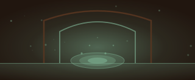
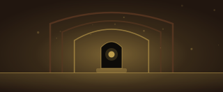
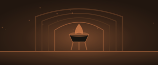
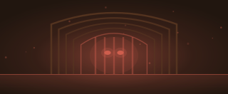
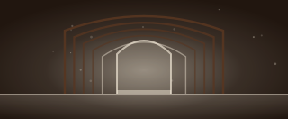
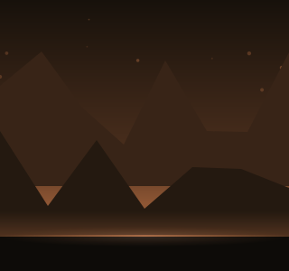

九境
Ninefold. An idle cultivation game. Qi gathers on its own, with the phone closed. Nine realms, about 90 days to the top, and no end after that.
This is the one page to read. Everything the game has is in it, in the order you would ask about it, and every number and name below is read straight out of the game's own code. It is a living document: the board underneath says what is finished and what is not, and closing a system means moving its row and writing its section.
簡 Em duas páginas, em português
Esta página é para o Bruno. Tudo o resto na bíblia está em inglês porque o jogo e o código estão em inglês; isto está aqui porque a pergunta "não sei bem o que temos e se está tudo funcional" merece uma resposta curta antes das quarenta e tal secções que explicam porquê.
O que é o jogo
Um jogo idle de cultivo, para telemóvel, ao alto, com uma mão. O qi sobe sozinho, com a app fechada, sempre, sem exceção. Gasta-se em quatro coisas que multiplicam e nunca se perdem. Nove reinos, cada um com nove degraus, e no fim de cada um está uma besta que tem de cair para se avançar. Acima do nono reino há mais nove céus, e depois disso não acaba.
O que já lá está
51 fechados, 0 abertos, 1 planeado. Um sistema só conta como fechado quando está construído, medido por um teste e escrito nesta página.
9 reinos · 9 céus · 36 bestas e 9 Dragões com nome · 9 posturas · 9 artes · 486 peças de equipamento · 28 nós na árvore · 27 pílulas · 32 feitos.
Quanto tempo dá
| como se joga | chega ao 9.º reino | acaba a subida |
|---|---|---|
| nunca luta never fights |
128 dias | 144 dias |
| quase não luta barely fights |
95 dias | 116 dias |
| uma vez por dia once a day |
70 dias | 85 dias |
| ocasional casual |
70 dias | 83 dias |
| ativo active |
46 dias | 57 dias |
| de hora a hora every hour |
33 dias | 41 dias |
| usa o 圍 em tudo drives it all |
47 dias | 58 dias |
| segue o 神 walks 神 |
45 dias | 55 dias |
Depois disso abrem-se os nove céus, um a cada três travessias. Para quem joga com regularidade, o último nome novo do jogo chega ao dia 150. Três meses são o dia 91. Nas semanas entre um céu e o seguinte o 期 muda na mesma, todas as segundas-feiras.
O que mudou com a auditoria
Está tudo funcional?
npm run smoke
abre o jogo construído num browser a sério, em seis profundidades. Visita todos os
separadores e abre o canto e os painéis atrás dele. Falha se alguma coisa rebentar,
não desenhar nada, ou mostrar NaN ao jogador. A última vez que
correu: todos os ecrãs abriram e nada estava partido.
E npm run actions é a outra metade
da pergunta, que é a que interessa antes de outra pessoa jogar: carrega nas
coisas. Comprar, lutar, perder, vestir, derreter, fundir, refinar, destilar.
Subir a torre, aprender um nó, tomar uma postura, fazer um 圍. Derrubar um warden,
passar de reino, atravessar o 劫, copiar o save para fora. Cada acto verifica o
save e não os pixels. Um botão que acende e não faz nada passa no smoke e
falha aqui. Última vez: os dezasseis actos fizeram o que existem para fazer.
Ao lado disso correm 318 testes, dos quais um atira dez mil saves
estragados ao validate() e outro seiscentos e setenta e dois
dirigidos, campo a campo.
O que falta decidir
Nada está a meio. A única linha do quadro que não está fechada é 轉世 Rebirth, e está marcada como planeada só para a decisão ficar escrita: 九境 é puramente vertical, nada faz reset, e todas as barras só sobem.
樣 What it looks like
A standing rule, and Bruno's words for it: "faz um mockup visual sempre com exemplos quando se altera algo relacionado com aspecto/arte." So every screen that changed is drawn here rather than described. It uses the game's own art functions and its own tables, and where there is a number it is the number the game would actually show. A mockup assembled from invented values is a drawing of something that does not exist.
梯 The climb, drawn
"layer 5 of 9" and "realm 5 of 9" were two numbers at opposite ends of the screen, and nothing on it ever said that one was inside the other. They are one object now, under the live bar, with the warden lit at the end of the rungs only when it is actually standing there.
Your qi fills one rung. Nine rungs fill 化神 Spirit Severing. Its warden then stands at the end, and beating it opens the next realm.
指 The pointing finger
The guide used to describe the button. It now draws a ring on it. The whole overlay is inert to the touch. The ring is over the button and the button still takes the tap, which is the one thing a coach mark must never get wrong. It waits a beat before scrolling, so the card is read before the screen moves, and it sits at the empty right-hand end of a wide target rather than over the sentence above it.
時 A step you cannot do yet
The second step asked for a kill that is not winnable for the first few minutes of the game, and asked for it anyway: a ring pulsing on a fight with no winning seed in it. A step that is not possible is now the next step: the same step, a quieter card, a bar showing how close, and a line handing over something to do in the meantime.
鑑 Reading a piece of gear
Tapping a piece in the chest wore it, so there was never a moment
in which a player could look at it. The numbers below are not illustrative. They
are Jadewater Sword against Elder Bronze Sword, run through
the same comparison the game runs. The two figures at the bottom are
power() and rate() with the piece put on in a copy of the
save. Both sides of the trade appear, including the 破 line it loses.
Against the Elder Bronze Sword you are wearing
圍 The drive
3600 taps to finish the record, and the most played cultivator we model reaches eight beasts of 36. A beast you have 熟 Known can be driven instead: 10, 50, 200 kills in one tap, paid for in qi, which is also the exchange the economy never had.
巨蟹 Giant Crab, halfway up the fifth realm. Fifty kills costs about one rung wherever you are standing, and fighting it one at a time is still free.
半 Finding the tree
Bruno, standing in the fifth realm with 20 道 unspent: "não encontro o tree/path function estou confuso." He was not missing it. The 道 tab opened on a stance picker, nine sequence slots and an art pool, and the tree's first node began about fourteen hundred pixels down. A tab called Path whose first screenful contains no path. Two halves and a switch, tree first, and the unspent count moved onto the tab bar where it is visible from anywhere.
The switch, and the same count on the tab bar, which is where it is seen from every other screen in the game.
凝丹 The way out of the only dead end
The wall below needs an escape hatch or it is not a wall, it is a stop. This is it, and it is drawn only at the moment it is an answer: 材 material at zero, a 妖丹 still to be had, and a warden that will not fall without one.
You can force a 妖丹 out of raw qi instead. It works, and it is dear: this is qi that would have opened layers.
凝 Condense a core 狩 A beast leaves material when it falls. That is the cheap way, and it is one tap away.At the fifth realm's ceiling. The price is condenseCost() and the card is drawn only while canBuy(cores) is false. It never shows before the first kill: a new cultivator has no material because nothing has fallen yet, not because it ran out.
境外 The card above the summit
Forty crossings against one animal called 龍 was the endgame. This is what stands in its place: the heaven you are in, what it opened, and the next one with its own Dragon already drawn. The whole card is read out of heavens.ts: the name, the colour, the count of crossings, and which animal the icon is.
Your qi runs gold, and it no longer leaves you when you spend it.
＋6 levels of 劍訣 and 妖丹, for good
At four marks. The heaven, the room it opened, and the animal three crossings away. All of it out of heavens.ts, including which Dragon is drawn.
出 Beasts still to come
A realm's three commons now walk out at layers 0, 4, 7 rather than all at once. The ones that have not arrived are shown rather than hidden, dimmed and dashed with the layer that brings them. It is the same argument as a locked tab, for the same reason: you cannot look forward to a thing you have never seen.
Standing on the third rung of 煉虛 Void Refining. Iron Centipede is already out; the other two are the realm's next two events.
收 The corner
Five bare characters floating over the corner of a screen that is already teaching characters is five unanswered questions at once. One button, and every row arrives with its name in English.
Shut, which is how every visit starts.
審 Read as a new player
Every screen, from a brand new save to the ninth heaven, read by somebody who has never seen the game, at 400 and at 320 wide. The harnesses were all green before it started, which is the point of doing it: none of what follows was a thing any of them could see.
| where | what a new player read | what it says now |
|---|---|---|
| 修, minute one | A red card under the boxes: No 材 material left, before anything had ever been killed | Nothing, until the first kill. Then Not enough 材 material |
| 狩, minute one | 3 beasts within reach, over three rows that each said ×2.4, ×7 and ×14 needed | 3 beasts to hunt · 0 you can beat now, and ×2.4 stronger |
| 修, the ladder | The widget said layer 4/9, the sentence beside it said rung | layer, everywhere the player reads it |
| 引 the help | The button beside this one, and there has been no button beside it since the menu folded | Where the Menu is, and that a dotted character answers a tap |
| 器 refining | +12 material on a price | 12 material |
| 器 the chest | 靈 2 lines · 天 5 | A 靈 piece carries 2 lines and a 天 piece 5 |
| 道 the tree | 6 free · 0/6, and names at 8px and 40% | 6 to spend · 0 of 6 spent, names at 9.5px, forks further apart |
| 秘境 the key | Seven rooms, with eleven on the door at the summit | A row of rooms, no count |
| 爐 at the summit | Every pill greyed, both prices in gold, nothing saying which was short | A qi price in red, and a line saying so |
| 洞天 the cave | The week's herb only as a chip inside the seed list, saying 3d left | 青苔 Spirit Moss is in season: a bed of it pays half again, over the beds |
| 緣, 秘境, 洞天 | Two monospace fonts the page never loads, so the phone's own | The game's own fonts |
塔 圍 Two rewards paid in silence
The tower card and the arena worked out a floor's material for themselves,
as the table times the seals, and the save was credited the record and the cards on
top. At the summit the audit photographed, the card quoted 30.8T
材 for a floor that paid 142T: 22% of it.
floorMaterial is the one function all three read now. And 圍 the drive,
which promises to pay exactly what the taps would have, swallowed the week's
first-kill qi on the quarry and kept paying the 熟 rate after 通 landed mid-drive. Both
have tests that fail on the old code.
畫 The art the audit asked for, and got
Everything else a player sees is painted or drawn from the save. That is 36 creatures, 9 Dragons, 9 realms, 9 heavens, 18 cultivators, 10 encounters and 9 arts, with the herbs, the pills and the rooms. The stances, the gear and the tree's nodes are characters and frames on purpose.
畫 The paintings
Every creature in the game was a silhouette inside a ring: one shape in one colour out of a public icon set, on a blue-black ground. It read, and it read as a placeholder. The first painting was dropped straight into that ring and Bruno said exactly what it looked like: "as imagens estão horríveis .. como podemos melhorar isto, está um badge ampliado e mal cortado circular .. péssimo." He was looking at a square painting blown up inside a circle with the corners of the paper still in it, which is the worst of both.
This section is how the art is made now, and it is written down because none of it is a one-off. 684 things in this game are drawn as a thing. 161 of them are painted. The rest arrive one sheet at a time, and the game is playable at every point in between.
色 The palette came first
The old ground was #04121A with cyan and magenta on it, which
is a science fiction palette wearing Chinese characters. Bruno, seeing it beside the
first paintings: "demasiado neon." Everything is now eight colours that exist
as ground minerals: ink, paper, jade, celadon, old bronze, gold leaf, cinnabar and
imperial violet. The nine realms walk that ramp in order. Green is the first
breath and the body, gold is the core, red is the furnace and the tribulation, and
violet is what is left after all of it. This page was repainted with them, because a
living document that shows the game in colours the game does not have is the one
thing it must not be.
張 One sheet at a time
Bruno paints these with the free credits of an image model, which is a
few pictures a day: "não consigo gerar tantas imagens com os créditos gratuitos
do gpt. consegues dar-me um prompt por batches e depois recortar as imagens e fazer
a tua magia?" So nothing is ever asked for one picture at a time. A sheet is one
prompt that comes back as one image: a ruled grid with nine or twelve paintings
inside it, all in the same hand, the same ink and the same light.
npm run sheets writes the prompts out of the game's own tables, so a
creature that is renamed is renamed in its prompt and a creature that is added gets
a panel. Fourteen sheets cover everything painted so far.
| sheet | grid | panels | in |
|---|---|---|---|
| 獸王 The nine wardens | 3×3 | 9 | ✓ |
| 女修 The cultivator, a woman | 3×3 | 9 | ✓ |
| 男修 The cultivator, a man | 3×3 | 9 | ✓ |
| 女修 The cultivator, a woman, the ninth alone | 1×1 | 1 | ✓ |
| 男修 The cultivator, a man, the ninth alone | 1×1 | 1 | ✓ |
| 緣 The ten encounters | 4×3 | 10 | ✓ |
| 境外 The nine Dragons of the heavens | 3×3 | 9 | ✓ |
| 天 The nine heavens, as places | 3×3 | 9 | ✓ |
| 訣 The nine arts | 3×3 | 9 | ✓ |
| 悟甲 Awakening cards, the first twelve | 4×3 | 12 | ✓ |
| 悟乙 Awakening cards, the last twelve | 4×3 | 12 | ✓ |
| 悟丙 Heaven cards, the first three heavens | 3×3 | 9 | ✓ |
| 悟丁 Heaven cards, the middle three heavens | 3×3 | 9 | ✓ |
| 悟戊 Heaven cards, the last three heavens | 3×3 | 9 | ✓ |
| 悟己 Heaven cards, the ninth heaven again | 3×1 | 3 | ✓ |
| 雜 Herbs, pills and the rooms of the vault | 4×3 | 10 | ✓ |
| 獸甲 The commons of the first three realms | 3×3 | 9 | ✓ |
| 獸乙 The commons of the middle three realms | 3×3 | 9 | ✓ |
| 獸丙 The commons of the last three realms | 3×3 | 9 | ✓ |
| 境 The nine realms | 3×3 | 9 | ✓ |
剪 The cut
One file arrives and the game needs 166
of them, so npm run slice cuts the sheet up. The whole difficulty is
finding the rules, and it took three tries. The first cutter looked for the flattest
rows of pixels and settled on bare paper eight pixels off the line. The second looked
for the darkest rows, and a dark creature leaning on the edge of its panel is darker
than a pencil line. A rule is not the darkest thing on a page. It is the
thinnest: a row much darker than the paper three to twenty pixels either side
of it, and nothing else on a painted sheet is thin in that way. The third cutter
measures that contrast, hunts a third of a cell around where each rule ought to be,
and falls back to the nominal line when it finds nothing convincing. It has not been
wrong on a sheet since.
A panel is then cut for the shape the screen wants. 牌 the plate keeps its paper and is masked into a disc, because at 46 pixels a pale disc with a painting on it reads as a page out of a bestiary. 鬥 the arena wears the same creature with the paper keyed off it and the edge softened, because at full size that same disc is a sticker. That is the picture Bruno was complaining about, and both halves of the answer are one painting:
 牌 the plate46px, on the hunt list. Keeps its paper.
牌 the plate46px, on the hunt list. Keeps its paper.
 剪 the cut-outFull size, in the arena. The paper is keyed off.
剪 the cut-outFull size, in the arena. The paper is keyed off.
鬥 The arena, before and after
The left is Bruno's own phone at midnight, and the words that came with it: "a arena está péssima como podes ver e sem criatividade, cultivador menor que os monstros ... Mas está feio." The right is the same fight, at the same width, from the built game. Both fighters are cut the same way now and sized against each other rather than against the half they were given. The ground has no line in it.


Keying the paper off is the one step that cannot be done by darkness either. Pale creatures came out full of holes: the inside of a white tiger is as pale as the page it is on. A transparent region fully enclosed by the creature is flooded back in. The cultivator cannot be keyed at all: skin painted in ink is paper. Those are vignetted instead, which keeps the page and loses the edge of it.
修 Who the cultivator is
The first 修 sheet aged one man from a villager to a ghost, and Bruno stopped it there. What he said: "não acho certo o cultivador ficar velho apenas porque sim e ser apenas male, tem que existir alguma lógica ou escolha." Both halves of that are right. There are two figures, the game never picks for you, and nobody ages: it is the same person in all nine, and what changes is their standing and how solidly they are there. By the ninth they are barely painted at all. Until the question is asked the screen draws 影 the figure it always drew, which is a shape and nobody in particular, and the answer is a painting and a name. Nothing about the numbers reads it.
 練氣
Qi Refining
練氣
Qi Refining
 築基
Foundation
築基
Foundation
 金丹
Golden Core
金丹
Golden Core
 元嬰
Nascent Soul
元嬰
Nascent Soul
 化神
Spirit Severing
化神
Spirit Severing
 煉虛
Void Refining
煉虛
Void Refining
 合體
Unity
合體
Unity
 大乘
Great Vehicle
大乘
Great Vehicle
 渡劫
Tribulation
渡劫
Tribulation 練氣
Qi Refining
練氣
Qi Refining
 築基
Foundation
築基
Foundation
 金丹
Golden Core
金丹
Golden Core
 元嬰
Nascent Soul
元嬰
Nascent Soul
 化神
Spirit Severing
化神
Spirit Severing
 煉虛
Void Refining
煉虛
Void Refining
 合體
Unity
合體
Unity
 大乘
Great Vehicle
大乘
Great Vehicle
 渡劫
Tribulation
渡劫
TribulationThe aura is still the game's, drawn live and read off the save: rings, motes, spokes and halos that no painting can carry, because they change while you watch them. What did change is that a painted figure gets half the aura, and the halo behind the head turns once every two minutes. At full strength the seventh realm drowned the painting it was meant to be lighting.
境 The nine realms
A landscape each, seen from a great height, the mountains across the middle and the bottom of the panel almost empty, because the bottom of the panel is where the fight happens. Each one is painted in its realm's own pigment.
 練氣
Qi Refining · jade
練氣
Qi Refining · jade
 築基
Foundation · celadon
築基
Foundation · celadon
 金丹
Golden Core · old bronze
金丹
Golden Core · old bronze
 元嬰
Nascent Soul · gold leaf
元嬰
Nascent Soul · gold leaf
 化神
Spirit Severing · amber
化神
Spirit Severing · amber
 煉虛
Void Refining · copper
煉虛
Void Refining · copper
 合體
Unity · cinnabar
合體
Unity · cinnabar
 大乘
Great Vehicle · plum
大乘
Great Vehicle · plum
 渡劫
Tribulation · imperial violet
渡劫
Tribulation · imperial violet狩 The bestiary
36 of them, three commons and one warden to a realm, all painted. They are the hunt list, the bestiary, the tower floors and the arena.
 山鼠
Mountain Rat
山鼠
Mountain Rat
 野犬
Wild Hound
野犬
Wild Hound
 澤蛙
Marsh Frog
澤蛙
Marsh Frog
 妖狐
Spirit Fox · warden
妖狐
Spirit Fox · warden
 青蛇
Green Serpent
青蛇
Green Serpent
 螳螂
Praying Mantis
螳螂
Praying Mantis
 血蝠
Blood Bat
血蝠
Blood Bat
 石猿
Stone Ape · warden
石猿
Stone Ape · warden
 鐵甲
Iron Beetle
鐵甲
Iron Beetle
 夜梟
Night Owl
夜梟
Night Owl
 血鴉
Blood Raven
血鴉
Blood Raven
 仙鶴
Immortal Crane · warden
仙鶴
Immortal Crane · warden
 鐵根彘
Ironroot Boar
鐵根彘
Ironroot Boar
 灰狼
Grey Wolf
灰狼
Grey Wolf
 山鷲
Ridge Vulture
雷虎
Thunder Tiger · warden
山鷲
Ridge Vulture
雷虎
Thunder Tiger · warden
 巨蟹
Giant Crab
巨蟹
Giant Crab
 水母
Jellyfish
水母
Jellyfish
 岩蜥
Rock Lizard
岩蜥
Rock Lizard
 玄武
Black Turtle · warden
玄武
Black Turtle · warden
 蜈蚣
Iron Centipede
蜈蚣
Iron Centipede
 毒蠍
Venom Scorpion
毒蠍
Venom Scorpion
 屍蟲
Corpse Worm
屍蟲
Corpse Worm
 石傀
Stone Puppet · warden
石傀
Stone Puppet · warden
 魔猿
Demon Ogre
魔猿
Demon Ogre
 鬼面
Ghost Face
鬼面
Ghost Face
 陰魂
Yin Wraith
陰魂
Yin Wraith
 魔狼
Demon Wolf · warden
魔狼
Demon Wolf · warden
 骨將
Bone General
骨將
Bone General
 石鬼
Gargoyle
石鬼
Gargoyle
 牛魔
Bull Demon
牛魔
Bull Demon
 蛟
Serpent Dragon · warden
蛟
Serpent Dragon · warden
 羽妖
Harpy
羽妖
Harpy
 獨角
Unicorn
獨角
Unicorn
 巨章
Colossal Squid
巨章
Colossal Squid
 龍
Dragon · warden
龍
Dragon · warden境外 The skies and their Dragons
Above the ninth realm there is no ground, so the backdrop is sky: cloud and starfield with nothing to stand on, walking out of violet through gold to bone. It is the one backdrop that moves, ninety seconds for a pass, slower than anybody will notice. Each heaven has its own Dragon, and giving them paintings is what stopped nine crossings looking like one animal fought nine times.
 真仙
True Immortal
真仙
True Immortal
 金仙
Golden Immortal
金仙
Golden Immortal
 太乙
Supreme Unity
太乙
Supreme Unity
 大羅
Grand Veil
大羅
Grand Veil
 准聖
Quasi-Sage
准聖
Quasi-Sage
 聖人
Sage
聖人
Sage
 道祖
Dao Ancestor
道祖
Dao Ancestor
 混元
Primordial Unity
混元
Primordial Unity
 鴻蒙
The Uncarved
鴻蒙
The Uncarved 蒼龍
Azure Dragon
蒼龍
Azure Dragon
 金龍
Golden Dragon
金龍
Golden Dragon
 九嬰
Nine-Headed Hydra
九嬰
Nine-Headed Hydra
 雙龍
Twin Dragons
雙龍
Twin Dragons
 應龍
Winged Dragon
應龍
Winged Dragon
 燭龍
Torch Dragon
燭龍
Torch Dragon
 星君
Star Lord
星君
Star Lord
 混沌
Chaos
混沌
Chaos
 鴻蒙
The Uncarved
鴻蒙
The Uncarved緣 The encounters
These keep their paper on purpose. An encounter is a page out of a traveller's notebook and it is shown as one, in a band across the top of the card that stops the game.
 老者
An old man on the mountain road
老者
An old man on the mountain road
 斷劍
A broken sword in the road
斷劍
A broken sword in the road
 乞兒
A child begging at a shrine
乞兒
A child begging at a shrine
 行商
A merchant with a covered cart
行商
A merchant with a covered cart
 醉道
A drunk cultivator under a tree
醉道
A drunk cultivator under a tree
 老鴉
A crow that will not leave
老鴉
A crow that will not leave
 殘碑
A broken stele
殘碑
A broken stele
 棄爐
An abandoned furnace
棄爐
An abandoned furnace
 劍客
A swordsman who wants a bout
劍客
A swordsman who wants a bout
 靈池
A pool with nothing living in it
靈池
A pool with nothing living in it符 The emblems
Everything the game draws as a symbol in a row: an art, an awakening card,
a herb, a line of pills, a room of the vault. 70 of them are
painted. They are shown at twenty to thirty pixels, so each is one object on bare
paper in as few strokes as it takes, rather than a scene nobody can see. They are
also the one family whose keys collide: 狼噬 Wolf Bite is an art and 貪狼 Greedy Wolf
is a card, both are keyed wolf, and every key carries its family in
front of it for that reason. Nine arts and four others:
 狐影
Fox Shadow
狐影
Fox Shadow
 猿臂
Ape Arm
猿臂
Ape Arm
 虎嘯
Tiger Roar
虎嘯
Tiger Roar
 鶴唳
Crane Cry
鶴唳
Crane Cry
 狼噬
Wolf Bite
狼噬
Wolf Bite
 龜息
Turtle Breath
龜息
Turtle Breath
 蛟騰
Serpent Rise
蛟騰
Serpent Rise
 龍威
Dragon Might
龍威
Dragon Might
 傀儡
Puppet Thread
傀儡
Puppet Thread
 月華蘭
Moonlight Orchid
月華蘭
Moonlight Orchid
 聚寶
Treasure Gathering
聚寶
Treasure Gathering
 龕
A shrine, long cold
龕
A shrine, long cold
 饕餮
Taotie
饕餮
Taotie動 What moves
Bruno: "tenta adicionar algumas animações e auras, brilhos etc .. conforme aplicável para dar enfase." Four of them, and every one obeys the rule the palette obeys: nothing emits light. A glow is a lamp or the moon.
All four stand down for prefers-reduced-motion. A game
somebody opens forty times a day is the wrong place to insist.
缺 What is still a pictogram
Counted by npm run artgaps, which reads the game's own tables
rather than the folder, so a family that grows shows up here the day it grows.
| family | painted | where it is, or what a sheet would be |
|---|---|---|
| 獸 creatures | 36 of 36 | 狩 the hunt list, 錄 the bestiary, 塔 a tower floor, 鬥 the arena |
| 龍 the heavens' Dragons | 9 of 9 | 鬥 the arena and 修 the card, above the ninth realm |
| 境 realms | 9 of 9 | 境 the realm card, and behind 鬥 the arena |
| 修 the cultivator | 18 of 18 | every screen with a portrait on it |
| 緣 encounters | 10 of 10 | 修 the card that stops the game |
| 境外 heaven backdrops | 9 of 9 | 鬥 behind a fight above the ninth realm |
| 悟道 awakening cards | 51 of 51 | 悟甲 and 悟乙, two sheets of twelve |
| 訣 arts | 9 of 9 | 訣, one sheet of nine |
| 勢 stances | 0 of 9 | none: a stance is not drawn as a symbol, it is a character and a name |
| 器 gear templates | 0 of 486 | drawn by the game from the template and the rarity, and it already reads |
| 草 herbs | 3 of 3 | 雜, shared with the pills and the rooms |
| 丹 pill lines | 3 of 3 | 雜, shared with the herbs and the rooms |
| 秘境 secret realm rooms | 4 of 4 | 雜, shared with the herbs and the pills |
| 道 technique nodes | 0 of 28 | none: they are dots on a tree at 30px and a painting would not survive it |
A missing picture is not a hole. Everything paintable falls back to
印 the seal, which is the frame and the icon the game already ships, and the painting
takes the same box when it lands. So the art can arrive one file at a time over
months and the game is never half drawn: it is drawn one way until it is drawn a
better one. npm run pictures reads the folder and writes the list, so a
painting dropped in is in the game on the next build, and a painting nobody made
costs nothing at all.
問 Three questions, answered with numbers
Bruno, at midnight, going to bed: "um player ativo tem atividades
suficientes e não se aborrece rápido? Tem conteúdo relevante para fazermos rankings
etc? Sistema de equipamentos atual é relevante?" Two of the three are
measurable, so they were measured rather than argued about. The harnesses that
answer them are npm run busy and npm run worth. The third
is a decision, and it is written down as one.
忙 Is there enough to do?
A kind is a system with something to offer: hunting, the tower, the cave, an upgrade that can be afforded. A tap is one separate action, so twenty beasts within reach is one kind and twenty taps. Kinds are the number that matters, because twenty of the same button is one decision made twenty times. A thin visit is two kinds or fewer: open the app, press the one thing, close it.
| how they play | visits | kinds | taps | thin | quiet |
|---|---|---|---|---|---|
| casual | 250 | 8.3 | 38 | 0% | 19d |
| active | 344 | 6.6 | 31 | 1% | 12d |
| every hour | 972 | 4.7 | 28 | 0% | 9d |
The honest half of the answer was the last column. The first reading of it said the problem is not how much there is to do, it is that nothing new arrives after the third week, and it was right. Four things have changed it since. A realm's arrivals are spread across its layers, and 秘境深 the deeper vault arrives at the seventh realm. 爐 The furnace moved to the ninth, and 期 the week turns every seven days for ever. 11 of the 16 systems still open inside the first four days, the last on day 47. The longest stretch with nothing new named is now 12 days, from day 34, and the nine heavens carry a card each after the summit.
| when | what opens |
|---|---|
| day 0.2 | realm 1 |
| day 0.2 | 狩 Hunting |
| day 0.2 | 妖丹 Beast Cores |
| day 0.2 | 錄 The Record |
| day 0.8 | realm 2 |
| day 0.8 | 器 Gear |
| day 0.8 | 煉器 Refining |
| day 0.8 | 洞天 The Cave |
| day 0.8 | 勢 Stances and Arts |
| day 0.8 | 道 The Path |
| day 1.7 | realm 3 |
| day 1.7 | 煉 Fusing |
| day 1.7 | 秘境 The Secret Realm |
| day 4.0 | realm 4 |
| day 4.0 | 樞 The Keystones |
| day 9.0 | realm 5 |
| day 9.0 | 塔 The Endless Tower |
| day 12.5 | realm 6 |
| day 12.5 | 圖鑑 The Bestiary |
| day 22.7 | realm 7 |
| day 22.7 | 秘境深 The Deeper Vault |
| day 34.3 | realm 8 |
| day 46.5 | realm 9 |
| day 46.5 | 爐 The Furnace |
| day 46.5 | 雷池 The Tribulation |
And this is which systems are actually live, visit by visit, across the whole climb of the active cultivator. A low number is not automatically wrong: 守 the warden is meant to be rare and 突破 the breakthrough is meant to be nine moments. A low number on something that cost a month to build is worth looking at.
| 修 buy an upgrade | 27% | |
| 狩 hunt a beast | 100% | |
| 圍 drive a beast | 99% | |
| 守 fight the warden | 2% | |
| 突破 break through | 0% | |
| 凝丹 condense a core | 0% | |
| 塔 climb a floor | 37% | |
| 爐 brew a pill | 19% | |
| 煉器 refine a piece | 16% | |
| 道 learn a node | 98% | |
| 洞天 work the cave | 99% | |
| 秘境 walk the vault | 49% | |
| 悟道 take a card | 0% | |
| 器 wear what fell | 58% | |
| 拆 melt the junk | 0% | |
| 期 take the week | 55% |
The three zeroes above it are a different thing and not a fault. 突破 the breakthrough, 悟道 the card and 拆 the melt are counted at the start of a visit, and the visit before them did them. They are never waiting for you, which is what they should be.
值 Is the gear system relevant?
Exactly answerable, because power() multiplies its terms:
take a cultivator the harness has played to the top, strip one source out of the
save, and divide. What comes back is what that source is carrying, with nothing to
argue about.
| at | 劍訣 | 妖丹 | 器 | 道 | 丹 | 錄 | 雷池 |
|---|---|---|---|---|---|---|---|
| 練氣 realm 1 | ×1.00 | ×1.00 | ×1.00 | ×1.00 | ×1.00 | ×1.00 | ×1.00 |
| 築基 realm 2 | ×4.02 | ×1.47 | ×1.10 | ×1.00 | ×1.00 | ×1.00 | ×1.00 |
| 金丹 realm 3 | ×8.91 | ×2.00 | ×1.82 | ×1.98 | ×1.00 | ×1.00 | ×1.00 |
| 元嬰 realm 4 | ×29 | ×3.17 | ×2.25 | ×3.42 | ×1.00 | ×1.00 | ×1.00 |
| 化神 realm 5 | ×97 | ×14 | ×2.43 | ×3.43 | ×1.00 | ×1.00 | ×1.00 |
| 煉虛 realm 6 | ×319 | ×51 | ×5.12 | ×3.73 | ×1.00 | ×1.00 | ×1.00 |
| 合體 realm 7 | ×1k | ×69 | ×6.10 | ×3.68 | ×1.00 | ×1.04 | ×1.00 |
| 大乘 realm 8 | ×4k | ×149 | ×6.77 | ×3.69 | ×1.00 | ×1.08 | ×1.00 |
| 渡劫 realm 9 | ×11k | ×187 | ×8.17 | ×3.64 | ×1.00 | ×1.12 | ×1.00 |
| 渡劫 the top | ×46k | ×255 | ×8.92 | ×3.62 | ×1.00 | ×1.16 | ×1.00 |
榜 Is there anything to rank?
There is plenty worth ranking. Days to the ninth realm, floors of 塔 the tower, crossings of 雷池 the tribulation, how much of the bestiary is 通 Mastered, the power at the top. Every one of them is a single number already in the save.
The reason there is no leaderboard is not content, it is that 九境 has no server and the save is a text file on the phone. Anything a phone sends can be written by the person holding it. A ranking built on numbers the save reports is a ranking of who edited their save, and the first week of any leaderboard is the week that proves it. There are three honest ways out, in order of cost:
sim/, which is pure by rule, and gets the same number or
throws the run away. This is the one design that works because of how this game is
already written, and it is a week of work and a small server.The recommendation is 友 first and 局 only if the game finds an audience. A verified leaderboard on a game with no players is a server bill.
續 What the measurement said to do next, and all three are done
Three things, in the order the numbers put them in. None of them was more content for the sake of it: the first two were about a game that already had everything in it by the third week. Each row now says what was built.
提 Four systems that are not in the game
Bruno, after a morning of the early game getting faster:
"sem sistemas de conteúdo, sinto que é tudo muito superficial e vazio, consegues apresentar propostas visuais de coisas que possamos implementar"
He is right, and the measurement agrees. Everything the first three realms ask of a player is a number going up. 材 material buys 妖丹 and now 煉器, qi buys the ladder, and that is the whole of it. There is no place you own, no run with an ending, no choice that makes your cultivator different from anybody else's, and nothing in the world that ever speaks to you.
All four are built now, and each has a section of its own further down this page. They are drawn here as they were proposed, with the game's own art and its own tables rather than described, because a system in a paragraph is a system nobody can judge. Each one is written to the laws this game already keeps: the sim stays pure, nothing uncapped may ever raise the qi rate, nothing is taken away for being away, and losing costs nothing. They are in the order I would build them.
提一 · 洞天 A place you own built
A cave with three beds. You plant a 靈草 spirit herb and it ripens over real hours, and a ripe herb waits for you for ever. Herbs are the third thing 爐 the furnace wants, so pills stop being qi and material alone.
This is the one that answers idle directly. Right now the only thing that happens while you are away is a bar filling, and a bar is not a place. A bed you planted six hours ago is a reason to open the app that is not arithmetic. The decision is real too: a bed planted is a bed you cannot use until it is taken, so three beds and five herbs is a choice every time.
Two beds working and one waiting. The ring is the growing, the character is the herb, and the line underneath is the only number on it.
Idle: it grows while you are gone Never taken away: a ripe herb waits Pays pills, never the qi rate
Cost: a new screen, a table of herbs, one field on the save. The furnace already exists and already takes two inputs.
提二 · 秘境 A run with an ending built
A door that opens at the third realm. Inside is a path of seven rooms, and at each one you are shown two ways on and told what is behind each. A beast. A cache. A cold shrine. A wanderer who wants something. You pick, you walk, and seven rooms later you come out with what you took.
This is the session. Everything in the game today is a loop with no ending, which is what makes three minutes of it feel like nothing happened. A run has a beginning and an end and a story you can tell about it, and it is the shape every idle game with legs eventually grows. Falling in a room does not hurt you. You come out early with what you already have, because losing costs nothing is the promise this whole game is built on.
Three rooms walked, standing at the fourth, and a warden at the end of it. The two doors name what is behind them, because a blind choice is a coin toss and a coin toss is not a decision.
Losing costs nothing: you walk out Entered when you choose, never on a timer Pays gear, 道 points and herbs
Cost: the biggest of the four. A room table, a path generator seeded off the save, and a screen. The fighting, the drops and the gear it hands out are all already built.
提三 · 悟道 A choice that makes you different built
Every breakthrough, three cards. You take one and it is yours for the rest of the climb. Nine realms, nine choices, and no two cultivators arrive at the ninth realm the same.
道 The tree is the closest thing the game has to this and it is not the same: its nodes are bought with points that accumulate, so given enough time everybody owns most of it. A card taken at a breakthrough is a door closed on two others. That is what makes it a build rather than a checklist, and it is the one of the four that costs almost nothing to make.
Three cards at the fifth breakthrough, one taken. Every effect on them pays material, odds, drops or the length of 入定, and never the gathering rate.
Nothing uncapped touches the qi rate A door closed is what makes it a build Nine of them across a climb
Cost: the cheapest by a long way. A table of cards, one array on the save, and a sheet at the breakthrough. The effects plug into the same places 道 the tree's already do.
提四 · 緣 Somebody on the road built
About one visit in six, a small card. An old man selling something he will not name. A broken sword in the road. A merchant who takes material and gives back a thing you cannot buy. One choice, two outcomes, and it is gone.
This one is not economy at all, it is the world. 九境 has nine realms, thirty-six beasts and a Dragon at the top, and nothing in it has ever spoken. A card like this costs a day to build and is the difference between a spreadsheet with characters on it and somewhere you are.
It sits where 示 the advice sits, it never blocks anything, and walking on is always free.
Never takes anything you did not offer Never blocks, never expires while you are away Flavour first, economy second
Cost: a day. A table of meetings, a seeded roll on the visit, and one card that already has a shape on the screen.
What was built, and what is left
悟道 and 緣 are in the game. They were the first two for the same reason they are cheapest. One lands at a moment the game already had and was spending on a single button. The other is a day's work for the whole difference in how the world reads. Both have their own sections below, with what the measurements said.
洞天 and 秘境 are built too, each with its own section below. 秘境 was left for last because it is the one worth doing properly, and it took five measurements and four different shapes before the wall between idle and active held.
悟道 The three cards at a breakthrough
Eight breakthroughs and nine heavens, 51 cards, and you keep one of every three. The other two close for good. 道 The tree is the nearest thing the game already had and it is not the same: its points accumulate, so given enough days everybody owns most of it, which makes it a checklist. A card taken is two doors shut, and that is what makes a build.
It is not fired, it is derived. What is owed is the realm minus one plus the heavens the marks have opened, what is taken is the length of the list, and the difference is the offer. So it cannot be missed by a reload, cannot be lost by closing the app mid-choice, and a save hand-edited to skip one is simply asked again. The whole mechanism is one subtraction.
力 Why no card pays power, which took a measurement to learn
The first table had five power cards compounding to 3.5x. The pure idler reached the ninth realm on day 121 instead of 171, while every cultivator who actually plays moved by less than a day: they are gated by qi and the idler is gated by power. The repo's own wall rule caught it, which is what it is for. Halving the numbers did not fix it either, because the shape was wrong and not the size.
So every card pays for being there. Material needs kills, drops need kills, melting needs drops, refining needs material. A cultivator who never opens the app gets nothing from any of them, which is the same deal the rest of the game offers. The wall now reads 1.79x against a rule of 1.5.
境外 And nine more, one at each heaven
忙 The harness counts what a cultivator has to decide, and the endgame had nothing in that column at all. The ninth realm is reached around day 47, the nine heavens run from about day 50 to day 140, and every crossing in them was the same crossing at a bigger number. The realms hand over eight permanent choices between them and the heavens handed over none, so the half of the game that lasts longest was the half with no build in it.
The same mechanism carries them: the trios continue in one list, the
offer is the same subtraction, and nothing in sim/awaken.ts knows that
a heaven is different from a realm.
Two of the realm cards' seven kinds are dead by the first heaven, because 道 the tree is finished and 藏 the chest is large. So two new kinds name what is alive up there: a pill asks less 材 material, and a floor of 塔 the tower pays more of it. Neither pays power. A pill is cheaper, not stronger.
量 What they are worth, measured, because it is not what a realm card is worth. Forty crossings played out on each way of leaning: 134 to 149 days, and a seventh of the power between the widest two. That is the right answer, and the reason is 雷池 the pool: the endgame's clock is written in days of your own gathering, so nothing a card pays can make a crossing come sooner. A heaven card is a build, not a speed-up, and it must never be sold as one.
煉器 What writing them found, which was worse than what they fixed
Every card here read as worth nothing, and for a while that looked like the cards being wrong. It was the harness. The endgame loop gathered, climbed and brewed and never once refined, so 材 material only ever went up and ended at 2.2e29 with nowhere to go. 示 The advice line has always sent a capped cultivator to 煉器, and a real one arrives at the heavens refining every slot.
With that one step added, a piece comes out at refine level 90. The Dragon at its old footing was then a walkover in 28 crossings of 40, which is the exact fault TRIBULATION_FOOTING exists to prevent. It was re-measured from 1.45 to 1.59, and the endgame now reads 144 days with a median crossing at 66%. The same fault 爐 the furnace had, in the same harness: a spending policy nobody wrote down, quietly deciding the answer.
緣 Somebody on the road
Every few hours, one small card. An old man selling something he will not name, a broken sword in the road, a drunk two realms above you who cannot stand up. One choice, two named outcomes, and it is gone.
This one is not economy, and the numbers say so: the largest 道 haul every meeting in the game could ever pay is 9 points, against 70 for the whole tree, and half the answers are nothing at all. 九境 has nine realms, thirty-six beasts and a Dragon at the top, and until this nothing in it had ever spoken.
Three rules, and they are the game's own. 取 Nothing is ever taken that was not offered: every cost sits on the button that charges it and walking on is free, always. 待 It never blocks and never expires, because what is on offer is derived from the save rather than fired at a moment. 定 It is chosen and not rolled: which meeting comes next is a function of the save, so two cultivators with the same history meet the same people, and the harness can walk it.
A qi figure on a meeting is counted in minutes of that cultivator's own standing gathering. A share of the rung was tried first and it is the wrong scale. A rung is a whole layer and grows exponentially, so six tenths of one read as 23.8M qi at the fourth realm to somebody holding two hundred thousand.
| Who | From realm | The two answers |
|---|---|---|
| 老者 An old man on the mountain road | 2 | Buy it: 材 8 beasts → a piece of gearWalk on: free → nothing |
| 斷劍 A broken sword in the road | 2 | Melt it down: free → 25 min of qiLeave it standing: free → 1 道 |
| 乞兒 A child begging at a shrine | 2 | Give what you have: 材 5 beasts → 1 道Sweep the shrine: free → 材 3 beasts |
| 行商 A merchant with a covered cart | 3 | Sell him your spare: 材 12 beasts → 90 min of qiAsk what he has seen: free → nothing |
| 醉道 A drunk cultivator under a tree | 3 | Sit with him a while: free → 2 道Take the gourd: 40 min of qi → a piece of gear |
| 老鴉 A crow that will not leave | 3 | Feed it: 材 6 beasts → a piece of gearIgnore it: free → nothing |
| 殘碑 A broken stele | 4 | Read what is left: free → 2 道Break it up for the jade: free → 60 min of qi |
| 棄爐 An abandoned furnace | 4 | Light it again: 60 min of qi → 材 14 beastsLeave it cold: free → nothing |
| 劍客 A swordsman who wants a bout | 5 | Cross blades: free → 3 道Decline: free → nothing |
| 靈池 A pool with nothing living in it | 5 | Sit in it: free → 120 min of qiFill a flask: free → 材 10 beasts |
洞天 A place you own
3 beds. 材 Material goes into the ground and comes up as 氣 qi, on its own, over real hours. Until this the only thing that happened while the app was shut was a bar filling, and a bar is not a place.
律 Why it cannot be farmed by somebody who is never there
悟道 The cards taught this the hard way a few hours before the cave was built. Anything that pays while you are away must not let the cultivator who is never there win. So a bed is worked from both ends by hand. You plant it, hours pass, and you come back and take it. Somebody who never opens the app plants nothing and harvests nothing, and 3 beds cap what any amount of opening it can ever be worth.
換 And what it converts is the other half. A seed costs 材 material, which only ever falls off beasts, and a ripe bed pays qi, which is the climb. So the cave is a hunter's road to the ladder and cannot be walked by somebody who does not hunt. It also puts a third answer beside 妖丹 cores and 煉器 refining for the question of where the material goes.
量 What it was worth, and what it had to be cut to
The first numbers were 13 to 18 minutes of qi an hour a bed. Three beds is then 54 minutes of gathering an hour on top of the sixty you already have, which is very nearly doubling the rate, and the climb collapsed:
| Habit | Before the cave | First numbers | Shipped |
|---|---|---|---|
| never fights | 145 | 145 | 145 |
| once a day | 90 | 64 | 85 |
| casual | 88 | 64 | 83 |
| active | 61.5 | 36 | 56 |
| every hour | 39.8 | 26.5 | 37 |
Cut to about a seventh, the cave takes 5 to 9 per cent off the climb for the cultivators who work it and nothing at all off the one who never fights, because that one never has the material to plant with. The wall reads 1.87x against a rule of 1.5.
| Herb | From realm | Takes | Seed | Pays | Min of qi an hour |
|---|---|---|---|---|---|
| 青苔 Spirit Moss | 2 | 2h | 材 2 beasts | 4 min of qi | 2.0 |
| 月華蘭 Moonlight Orchid | 2 | 6h | 材 5 beasts | 13 min of qi | 2.2 |
| 龍血草 Dragonblood Grass | 3 | 12h | 材 9 beasts | 30 min of qi | 2.5 |
The longer herb is the better rate, and that is the decision the beds are for. A two-hour herb three times a day beats a twelve-hour one if you are there three times a day, and loses badly if you are not. Nothing rots and nothing is lost by being late. The only thing a long wait costs is the bed it stands in.
明 The table above, on the screen
Bruno: "a farming também devia ser mais coerente e perceber o tipo de ganhos". The decision in the paragraph above was real and the screen was not showing any of it. A seed asked for material and named an hour count. It said nothing at all about what came back until the bed was ripe, which makes the one choice the cave exists for a choice made blind.
So a seed now says three things: what it costs, what it ripens into, and what that is an hour. A bed still growing says what it will be worth rather than only when it is ready. And the screen says the one thing about the value that surprises people: a bed pays at the rate you gather at when you take it, so a breakthrough while it grows makes it worth more, and nothing ever makes it worth less. The claim that the longer herb is the better rate is now a test, because a screen that quotes a rate is a screen that can start lying.
進 And the formatter carried wrong, which the cave is what landed on
A bed four hours from ripe read as 3h 60min. Rounding the hours and the minutes separately lets the remainder overflow its own unit, and a day less a few minutes reads as 1d 24h the same way. The bug is as old as the function; nothing had ever landed on the wrong side of a boundary before. It rounds to the smaller unit first and carries now, and a test walks three days a few seconds at a time looking for it.
秘境 A run with an ending
A door that opens every 8 hours and then waits for ever. 7 rooms, two ways on at each, and every other one is a gate with a single guardian and no way past it. Everything else in this game is a loop with no ending, which is why three minutes of it can feel like nothing happened.
銀 Nothing is carried, so nothing is at stake
Every room pays into the save the moment it is opened, and that one
decision is what makes the rest of it simple. Losing costs nothing because there
is nothing to lose. Closing the app in room four keeps every room already walked.
A save can never hold a run's worth of gear in flight for validate to
have to reason about. Three numbers are stored and no loot: where you are, when
the last run ended, and how many you have finished.
量 Three measurements, three leaks, and all of them the same law
This one took the longest to get right, and every version of the problem was a version of the same rule: a thing that pays must not pay the cultivator who is never there.
| What was tried | The wall | What was leaking |
|---|---|---|
| Seven reward doors, no gates | 1.39 | A cultivator who never hunts walked all seven, every run, and took 29 days off their climb. |
| Gates of two beasts a realm above | 1.56 | The gates themselves paid: three kills of a beast above your realm a run, with the material and the drops. |
| A gate that pays nothing at all | 1.88 | Better. But both doors read 2% at the fourth realm, which is not a choice, and it is content a mid-realm player cannot touch. |
| One guardian, ramped, own realm first | 1.53 | Readable, and now the walker got through: 藏 the cache was handing a non-hunter a thousand beasts' worth of 材. |
| Shipped: no material anywhere in the run | 1.91 | 材 comes off beasts and from nowhere else. What is left pays qi, 道 points and gear. |
關 The rule the gates ended on was already written down in this repository, for 守 the wardens: a gate that pays for its own key is not a gate. Beating a guardian opens the way and does nothing else. No material, no drop, and not a mark on 錄 the record, because it is not a hunt.
Shipped, the whole run costs about one per cent of the climb for every habit, which is what a content system should cost. What it is for is having a beginning and an end.
圖 A door is a picture of where it goes
A run was a paragraph, a row of seals and two buttons with a 26 pixel
icon on each. 藝 art/secret.ts draws the room behind each door
instead, and it keeps the rule 塔 the tower set: the drawing is a reading of the
save, not a picture next to it. The vault is the colour of the realm you are
standing in. The arches recede one further for every two rooms behind you, so room
six is visibly deeper underground than room one. A gate is drawn as what a gate is:
the way on, barred, with something awake in front of it.




The four panels above are the real function, called with the arguments the screen calls it with, at the sixth realm.
記 What the run gave, at the end of it
Bruno: "no fim mostrar o loot e ganhos totais". He was right, and the cause was the law this system is built on. Every room pays into the save the moment it is opened. So a run that paid four times over lands in a bar that was already moving, a badge on a tab, and a chest with forty other pieces in it. Nothing was ever wrong. Nothing was ever visible either.
So the save carries a record of the run beside the run: qi, 道 points, the pieces walked out with, the rooms opened and the guardians put down. It is a record and never loot in flight. The difference is held to by a test: the qi on the tally has to equal the qi the save gained, to the unit.
The running total is on the screen while the run is still being walked too, because that is the question a gate asks: is what I am holding worth the next one?

出 The way out, the panel the end of a run wears.
深 The three gates, and what is behind the other four doors
The first gate is the strongest common of the realm you stand in, which somebody near their ceiling should beat. The second is the weakest of the realm above. The third is the strongest thing the realm above has, and it is meant to stop most people. A mid-realm walker gets two or three rooms and walks out with them; a ceiling walker gets all 7.
| Room | What is behind it |
|---|---|
| 泉 A spring that has not been drunk | Qi, counted in minutes of your own gathering, and more of it the deeper you are. |
| 龕 A shrine, long cold | A 道 point, sometimes two, for whoever sweeps it. |
| 爐 A brazier with something left in it | A piece of gear, rolled off this realm and lifted. |
期 The one thing that never runs out
忙 The harness that counts how much there is to do said the plainest thing about a long idle game: everything in it arrives once. Forty-odd arrivals, the last of them around the seventh week, and after that the game is the same game every day for ever. The bestiary is read, the tree is spent, 秘境 walks the same rooms. Nothing was ever different on a Tuesday.
One mark now rides the calendar. It hands over no new content: it points at content that is already there and says that one, this week.
獸The week's quarryOne common beast, drawn from what has walked out for this cultivator, worth double 材 material all week. The first kill of the week pays a share of a rung of qi, once.
草The herb in seasonA bed of it pays half again. It is the only week the short herb beats the long one, which is the one decision 洞天 the cave exists for.
室The blessed roomOne reward room of 秘境 pays double, named on the door card before the run starts. Never a gate: a gate pays nothing by design, and doubling nothing is a mark with nothing behind it.
純 Why there is no server and nothing to sync
All three are a pure function of the week number and the save, and the
week number is read off the same instant validate has already capped at
the real clock. So two cultivators who open the app on the same Tuesday are looking
at the same week. A phone with its clock wound forward gets a different week, not a
second helping of this one. The whole memory of it is one number
on the save: the week the once-a-week qi was last taken in. A week index rather than
an instant, on purpose, because a week index cannot be walked backwards.
律 Why it may never touch the rate, and does not
A rotation is uncapped by construction: there is always a next week. So every one of the three is a multiplier on something already capped by hand. The quarry pays 材 material, which only falls off a beast somebody went and killed. The season pays a bed, and there are three beds and they are planted with material. The blessed room is one room of one run, and the door only opens once a day.
量 Measured over a whole climb, before and after: the cultivator who never fights finishes on day 144 either way, and the active one moves from 58 to 57. A rotation the idler cannot see is the entire point of it.
狀 Where we are
Three states and no fourth. 成 closed means built, measured by a test, and written up below. 行 open means it exists and is still moving. 待 planned means agreed and not started. "Mostly done" is open.
51 closed, 0 open, 1 planned. Counted from the board itself, so it cannot disagree with the rows under it.
包 Where to play
One codebase, two ways in. The page is the game; the APK is a window onto the same page, so it is installed once and never again. Every push updates both.
環 How it is played
Open the app. Take the hours that passed. Spend what they gathered. Fight something. Close it again.
開 What each realm opens
九境 is purely vertical. Nothing resets, ever. There is no rebirth and there will not be one: the ladder, 無盡塔 the tower, 爐 the furnace, 煉器 refining and 渡劫 the marks all only go up, and four of those five have no top at all.
A game shaped that way owes the player one thing in return, and for a long time it did not pay it: climbing has to hand you something you did not have before. Seven systems were open at realm 1, minute 1: gear, fusing, the tree, the tower, the record, the furnace, refining. So a new cultivator met five tabs and a dozen mechanics at once and then climbed eight realms that gave them nothing but bigger numbers.
| realm | 勢 stance | 訣 art | 開 and what opens |
|---|---|---|---|
| 練氣 Qi Refining | 疾 Swift | 狐影 Fox Shadow | 狩 Hunting 妖丹 Beast Cores 錄 The Record |
| 築基 Foundation | 守 Guard | 猿臂 Ape Arm | 器 Gear 煉器 Refining 洞天 The Cave 勢 Stances and Arts 道 The Path |
| 金丹 Golden Core | 兇 Ferocious | 鶴唳 Crane Cry | 煉 Fusing 秘境 The Secret Realm |
| 元嬰 Nascent Soul | 纏 Entangle | 虎嘯 Tiger Roar | 樞 The Keystones |
| 化神 Spirit Severing | 續 Endure | 龜息 Turtle Breath | 塔 The Endless Tower |
| 煉虛 Void Refining | 穩 Steady | 傀儡 Puppet Thread | 圖鑑 The Bestiary |
| 合體 Unity | 險 Reckless | 狼噬 Wolf Bite | 秘境深 The Deeper Vault |
| 大乘 Great Vehicle | 逆 Reverse | 蛟騰 Serpent Rise | the loop itself |
| 渡劫 Tribulation | 鏡 Mirror | 龍威 Dragon Might | 爐 The Furnace 雷池 The Tribulation |
The first realm was deliberately bare, and that was an over-correction. The fear was right; the answer taken from it was nothing at all, for thirteen hours: a bar, eighteen purchases, and one fight at the very end. The second realm blooms, but a player has to last until it.
勤 Playing, and waiting
An idle game has to answer one question honestly: what does being there buy me? For a while 九境 answered it badly. Measured, somebody playing six times a day reached the ninth realm later than somebody who opened the app once, because the qi they spent on power was qi that did not open a layer.
Three things carry the difference now, and every one of them only ever adds:
Five cultivators, one game, played out rather than guessed
Every one of them walks a 道 branch, hunts, picks up what falls and wears it. That sentence is newer than it should be: for most of this game's life the harness did none of those things. Every number it printed belonged to a cultivator who does not exist.
| habit | visits | open | realm 9 | 力 at the end | tower | fights |
|---|---|---|---|---|---|---|
| never fightsOpens it once a day, buys what the qi affords, and never taps a beast. | 1x | 0 min | day 128 | 39M | — | 8 |
| barely fightsThe same visit as the one above, and two beasts before putting it down. | 1x | 0 min | day 95 | 57.3M | — | 240 |
| once a dayOne visit a day, but the visit counts: a few kills and whatever the tower will give up. | 1x | 2 min | day 70 | 10.1B | 108 | 936 |
| casualThree visits, some hunting, never opens the tower. | 3x | 5 min | day 70 | 2.03B | — | 758 |
| activeSix visits, ten minutes each, hunts, climbs and brews. | 6x | 10 min | day 46 | 29.5B | 113 | 4,145 |
| every hourEvery waking hour. As played as this game can be played. | 24x | 15 min | day 33 | 42.3B | 115 | 13,339 |
| drives it allPlays like the active cultivator and pours every spare coin into 圍 drives. | 6x | 10 min | day 47 | 22.6B | 112 | 4,306 |
| walks 神The active cultivator again, walking 神 the Spirit instead of 劍 the Sword. | 6x | 10 min | day 45 | 7.33B | 106 | 3,968 |
The top row is the whole point. That cultivator's qi is not the problem. every upgrade qi can buy is at its cap and the bar fills as fast as anybody's. What they are short of is not qi. It is a reason to have been there.
And the bottom row is the other half: playing every waking hour is worth about twice the speed of playing casually, not twenty times. The game is not supposed to belong to whoever has the most free time.
守貢 The wall, and why it had to be a slope
Bruno asked for it in one sentence: "não um muro que torne impossivel mas que dificulte players 100% idle e premeie jogadores mais ativos." Not a locked door. A climb that is harder for somebody who never plays and kinder to somebody who does.
Why the obvious lever could not do it
The design was already there and it was not holding. A warden's power counts 妖丹 cores, so from the third realm a warden cannot be walked past by anyone who has never killed anything. Except that the warden itself paid a full harvest of 材. Nine warden kills funded the cores for the next nine warden kills, and the gate financed its own key. Measured, a cultivator who never tapped a beast reached the ninth realm holding 39 core levels against the 40 the last warden reads for. Through by a hair, on a loop that never asked them to play.
The obvious fix is to cut what a warden pays. It was swept across its whole range, and it turns out to have no middle at all:
| a warden pays… | the waiter finishes |
|---|---|
| everything (as shipped) | day 142 |
| 90% | day 142 |
| 80% | day 142 |
| 70% | never, stuck in the eighth realm |
| 60% | never, stuck in the seventh |
A core's price climbs by a third every level and a tribute is flat, so the two curves cross once and the answer flips from unchanged to stopped for ever between two neighbouring settings. There is no number to tune. A lever with no middle cannot build a wall that only slows you down.
So the middle was built instead
Two pieces, and neither works without the other.
The second one is what turns the cliff into a dial. Measured across it, with every other cultivator unchanged to the day:
| a condensed core costs… | the waiter finishes | everybody who fights |
|---|---|---|
| 2.2 rungs | day 171 | unchanged |
| 4 rungs | day 188 | unchanged |
| 6 rungs (shipped) | day 217 | unchanged |
| 9 rungs | day 253 | unchanged |
| 14 rungs | day 316 | unchanged |
| 20 rungs | day 392 | unchanged |
What it actually asks for
This is the number that matters, and it is deliberately small. 勤 the harness grew a cultivator whose day is the waiter's day exactly, one visit with no tower, no gear and no furnace, plus two beasts before putting the phone down. Two beasts a day is worth 33 days off the climb.
拆 Melting gear down
Bruno, on the early game: "uma nota para impulsionar ou melhorar pelo menos um pouco o fluxo de qi inicialmente. Salvage gear por exemplo, multiple salvage ou solo salvage, por algum qi."
The hole it fills turned out to be older than the thin qi flow. 藏 A full chest does not refuse a drop. It throws the worst piece on the floor to make room, so from the second realm onward the game has been deleting gear and paying nothing for it, one piece per drop for the rest of the run. Salvage is what that deletion should always have been.
Seven pieces in the chest at 金丹 the third realm, four of them 凡. The button says what it will take and what it pays before it is pressed, because there is no undo, and what it pays is 19% of the layer being climbed.
早 Why the share falls as the realms rise
The first version paid a flat share and it was swept across its whole range. It did nothing at all for the cultivators it was asked to help:
| a flat share of… | once a day | casual | active | every hour |
|---|---|---|---|---|
| nothing | 108 | 95 | 72 | 52 |
| 0.05 | 107 | 95 | 71 | 49 |
| 0.10 | 107 | 95 | 70 | 46 |
| 0.20 | 108 | 95 | 68 | 43 |
| 0.35 | 108 | 93 | 66 | 38 |
Four kills a day is under one drop a day, so the two cultivators in the middle did not move by a single day at any setting. What moved was the hourly one, who melts thousands, and who already runs out of game first, so taking fourteen days off their climb is the opposite of what was wanted.
What it is actually worth
A 凡 Common against the layer being climbed when it drops, and then what the melt adds up to across a whole realm. Both read out of the game rather than argued about:
| realm | melts for | of a layer |
|---|---|---|
| 練氣 Qi Refining | 270 | 6.6% |
| 築基 Foundation | 5999 | 5.6% |
| 金丹 Golden Core | 109k | 4.8% |
| 元嬰 Nascent Soul | 1.61M | 4.1% |
| 化神 Spirit Severing | 19.5M | 3.5% |
| 煉虛 Void Refining | 193M | 2.9% |
| 合體 Unity | 1.55B | 2.5% |
| 大乘 Great Vehicle | 10.2B | 2.1% |
| 渡劫 Tribulation | 54.9B | 1.8% |
| habit | 2 | 3 | 4 | 5 | 6 |
|---|---|---|---|---|---|
| once a day | 0.3% | 0.9% | 1.3% | 0.7% | 1.6% |
| casual | 0.5% | 1.6% | 2.8% | 2.7% | 3.3% |
| active | 2.6% | 4.9% | 8.3% | 3.8% | 9.5% |
| every hour | 9.7% | 18.8% | 30.0% | 15.5% | 34.1% |
| drives it all | 2.6% | 5.6% | 7.8% | 3.8% | 9.8% |
| walks 神 | 2.1% | 5.3% | 7.8% | 3.8% | 9.1% |
買 Where the qi goes the moment it lands
Bruno, having played with it: "já tive imensos casos de salvage items e o meu qi resetar ou não contabilizar." Traced in the running game, at the second realm's fourth rung: he stands at 60,059 qi, melts four pieces for 24,000, and the number on the screen reads 8,892. He was paid, and he watched fifty-one thousand qi leave.
Nothing was taken. That rung costs 75,000 and advance has
one rule it has always had: a layer opens the instant its price is met, and
nobody chooses. A lump landing on a rung you can nearly afford buys it, and the bar
starts again on the next one. It is the climb happening. The game simply never said
so.
buysWith, which walks the same rungs
advance walks with no clock in it, so the button cannot promise one
thing and the ladder do another.閒 Where a realm's qi goes
A claim that felt true, and was worth testing before anything was built on it. Bruno, on the early game: "hoje os quatro upgrades enchem-se em ~9 horas e depois a barra só enche", and the answer that suggested itself was to give the first three realms something more to spend qi on.
It would have been wasted work. Every realm lets you buy the same share of its own ladder, to within six points:
| realm | allows |
|---|---|
| 練氣 Qi Refining | 156% |
| 築基 Foundation | 155% |
| 金丹 Golden Core | 155% |
| 元嬰 Nascent Soul | 154% |
| 化神 Spirit Severing | 153% |
| 煉虛 Void Refining | 152% |
| 合體 Unity | 152% |
| 大乘 Great Vehicle | 151% |
| 渡劫 Tribulation | 150% |
The first realm is not an outlier by a single point. A cultivator who checks in puts 44–62% of their qi into upgrades and the bar gets the rest, which is the idle contract working rather than failing. And the four boxes are full at most 4–14% of a realm, only in the stretch right before the warden.
頂 What the measurement did find
A different thing in the same place, and it is the one worth knowing. A realm's bar stops at its ninth rung. There is no tenth, and 突破 the breakthrough needs the warden down first, so qi banks there with nowhere at all to go. For the lightest cultivator that is half of the first realm, and it used to be three quarters of a first realm twice as long:
| realm | lasts | into 修 | bar full | 守 out of reach |
|---|---|---|---|---|
| 練氣 | 24h | 61% | 50% | 50% |
| 築基 | 48h | 45% | 14% | 14% |
| 金丹 | 120h | 48% | 9% | 9% |
| 元嬰 | 216h | 29% | 0% | 0% |
| 化神 | 384h | 41% | 0% | 0% |
| 煉虛 | 528h | 45% | 0% | 0% |
| 合體 | 696h | 58% | 0% | 0% |
| 大乘 | 600h | 55% | 0% | 0% |
| 渡劫 | 522h | 43% | 0% | 0% |
| realm | lasts | into 修 | bar full | 守 out of reach |
|---|---|---|---|---|
| 練氣 | 16h | 64% | 34% | 34% |
| 築基 | 32h | 35% | 0% | 0% |
| 金丹 | 96h | 37% | 0% | 0% |
| 元嬰 | 208h | 59% | 0% | 0% |
| 化神 | 312h | 57% | 0% | 0% |
| 煉虛 | 480h | 60% | 0% | 0% |
| 合體 | 544h | 57% | 0% | 0% |
| 大乘 | 640h | 64% | 0% | 0% |
| 渡劫 | 444h | 57% | 0% | 0% |
| realm | lasts | into 修 | bar full | 守 out of reach |
|---|---|---|---|---|
| 練氣 | 16h | 66% | 21% | 21% |
| 築基 | 24h | 18% | 0% | 0% |
| 金丹 | 92h | 55% | 0% | 0% |
| 元嬰 | 192h | 64% | 0% | 0% |
| 化神 | 276h | 57% | 0% | 0% |
| 煉虛 | 480h | 65% | 0% | 0% |
| 合體 | 556h | 64% | 0% | 0% |
| 大乘 | 576h | 63% | 0% | 0% |
| 渡劫 | 428h | 57% | 0% | 0% |
| realm | lasts | into 修 | bar full | 守 out of reach |
|---|---|---|---|---|
| 練氣 | 12h | 46% | 15% | 15% |
| 築基 | 32h | 31% | 0% | 0% |
| 金丹 | 88h | 51% | 0% | 0% |
| 元嬰 | 196h | 64% | 0% | 0% |
| 化神 | 276h | 57% | 0% | 0% |
| 煉虛 | 476h | 65% | 0% | 0% |
| 合體 | 512h | 57% | 0% | 0% |
| 大乘 | 620h | 64% | 0% | 0% |
| 渡劫 | 428h | 57% | 0% | 0% |
into 修 is the share of that realm's qi that went into upgrades rather than into the bar. bar full is the share of the realm spent at its ceiling, where the bar has stopped and qi banks until 突破 takes it. 守 out of reach is the part of that with the warden still standing there unbeaten, which is the genuinely dead half and is dealt with below.
It decays fast, and it decays with showing up: 50% of the first realm at one visit a day, 34% at three, 21% at six, and nothing at all from the fourth realm on for anybody. What is left of it is entirely the wait to be strong enough for a warden: a fight to prepare for rather than a bar to watch.
守 費 Both halves of it were gates, and both are gone
The wait splits in two, and one half turned out to be a fault rather
than a fact. A warden used to stand while the bar was full:
atCeiling, which is the last rung plus the qi to pay for it. So a cultivator who arrived too
weak, banked until they could afford the upgrades that would beat it, and then
bought them, watched the warden vanish: the qi they had just spent was what
was holding it there. The game took the fight away at the exact moment they did the
right thing to win it, and asked for a whole rung back before offering it again.
Traced on somebody who opens the app once a day: at 24 hours they stand at the first realm's last rung with 63% against 妖狐 the fox and no fox to fight. They leave the realm at 48. Every visit rhythm leaves it at 98%, so the warden was never the wall. The vanishing was.
The other half was the toll. Having beaten the warden you still had to be holding the ninth rung's price to press 突破, and the breakthrough then burned it. I told Bruno that was a double charge and it was not: banking the rung, spending it on upgrades and banking it again is two payments for two different things. What it really was is a question about how much a realm costs, nine rungs or eight, and he answered it.
Measured, it takes 3 to 16 days off the climb and takes most from the cultivators who show up least: 184 days to 168 for the one who never fights, 107 to 95 for one visit a day, 71 to 67 for six. The first realm goes from 48 hours to 24 at one visit a day, and the 守 column above is now zero from the fourth realm up for everybody.
梯 And the mechanism underneath all of it, which is one line
That is not a fault to be repaired, and it is written down here so that it stops being rediscovered as one. It used to be the largest single reason that playing beats waiting, and 銀 the carry above has since taken most of that away. That is the honest correction to this paragraph, rather than leaving it standing.
Two other candidate fixes were measured and both were dropped: more to spend on in the early realms (the share table at the top says there is already as much as anywhere). And opening 圍 the drive at the first kill rather than the tenth, which moved one realm by one point. A cultivator who visits once a day cannot spend qi while the app is shut, whatever is on the screen.
診 Reading a cultivator from the save they sent you
Every improvement in this repository came from one person playing and saying what they felt: "não encontro o tree", "a primeira hunt não dá nada", "o qi resetar", "o qi per sec está sempre a alterar". That is the best signal this project has, and it runs through exactly one phone. The moment anybody else plays it stops working: somebody plays for twenty minutes, stops, and nothing comes back but silence.
npm run read reads the run out of it. It reads and prints; it never
writes anything and it never asks the network.空 The section it exists for
Where they got to and how they compare to the eight modelled cultivators is worth knowing. What is open to them and has never once been touched is worth building the tool for. Read off a fabricated tester who reached the fifth realm in eleven days:
空 what is open to them and never been touched 道 the tree, open since the 築基 Foundation realm, not one node, 21 道 sitting unspent 勢 no stance taken, open since the 築基 Foundation realm, 9 to choose from 塔 the tower never climbed, open since the 化神 Spirit Severing realm 圍 the drive, 4 beasts are 熟 Known and could be driven instead of tapped 判 the one line nothing was in the way, 4 boxes lit and 13 beasts in reach, and they stopped anyway, with 4 systems open and never once used. That list is where to look first.
"Reached the fifth realm on day eleven and never opened 道" is a sentence somebody can act on. "I played for a bit and stopped" is not.
待 The home screen had nothing to press four visits in five
Measured, six visits a day, counting what 修 Cultivate could actually offer at each one:
| realm | boxes lit | nothing to press | all four 滿 | dearer than the rung |
|---|---|---|---|---|
| 2 | 3.6 | 0% | 0% | 0.00 |
| 4 | 1.1 | 52% | 0% | 0.27 |
| 5 | 0.5 | 68% | 0% | 0.90 |
| 7 | 0.2 | 84% | 0% | 1.12 |
| 9 | 0.3 | 80% | 0% | 0.81 |
Never because the boxes were full. That column is zero the whole way up. Always because nothing was affordable, and the last column is why.
That is the economy working, not a fault in it. The fault was leaving the player to infer it from a price they watched never arrive, which is not something anybody infers. They conclude the game is broken, or that they are playing it wrong.
in 40m when the rung you are on can hold it and gathering will
do; after 4 more layers when it cannot, with one line underneath
saying why. Read off the real sixth realm: 5.95B one rung up, 12.5B four rungs up,
8.22B two rungs up. The screen went from three dead prices to three answers, and
the economy did not move by a single qi.763 qi · in 8 min,
1090 qi · in 14 min, 491 qi · in 4 min. A dead first ten
minutes became a schedule, which is the difference between a game that is idling
and a game that looks broken.The countdown rides the standing rate and not the one 入定 is paying at that moment, on purpose: the sitting ends after a quarter of an hour, so a countdown riding on it would promise a minute that arrives at four. A player who is sitting gets there sooner than the screen said, which is the only direction this is allowed to be wrong in.
狩 Twenty-five buttons that all said 98%
Measured over a whole climb, six visits a day, counting every beast the hunt screen offered at every visit and what its odds actually said:
| realm | beasts shown | over 90% | a real question | finished |
|---|---|---|---|---|
| 1 | 3.0 | 53% | 7% | 0.0 |
| 2 | 5.1 | 92% | 6% | 0.0 |
| 3 | 7.8 | 99% | 1% | 0.0 |
| 5 | 13.6 | 100% | 0% | 3.0 |
| 7 | 19.6 | 100% | 0% | 7.3 |
| 9 | 25.4 | 100% | 0% | 13.0 |
From the third realm on nothing on that screen is ever a question, and by the ninth it is twenty-five rows of 98% with half of them already finished. This page's own notes said it feared exactly that screen, and the sort that put the unfinished ones on top was only half an answer. A list of twenty-five is a list nobody reads, however well it is ordered.
氣 Why the qi a second would not stand still
Bruno, watching the number: "verifiquei que o qi per sec está sempre a alterar. Não faz muito sentido, não deveria ser um valor fixo consoante stats?" He was right, and the game agreed with him without ever telling him.
There are two numbers and the screen was showing their product under one name. The standing rate is fixed by what has been climbed and what has been bought: 81 layers at ×1.02 each, the upgrades, the gear, the tree. It does not move unless you move it. 入定 the sitting is the other one: it climbs from ×1 to ×3 over 3 minutes with the app open, holds, and ends after 15 minutes. So the one number on the screen rose for three minutes, sat still for twelve, and then fell to a third of itself while the player watched, with nothing beside it.
+124 qi / s standing, a 入定 ×3.0 badge, and
373 qi / s now underneath. The fixed number is the one the eye rests
on and the moving one says what is moving it, which is the rule every other pair
of numbers in this game already followed.page.clock drives the built game's own clock forward, and
both states, the sitting at ×3 and the line after it passes, were read off the
real screen in a second and a half.丹 The coin the hunting paid, and what it could buy
Bruno, halfway up the second realm: "dei max em todos os monstros disponíveis e vou a meio do realm, não existe bem gasto nem incentivo para mais nada." Measured, it was worse than that reads. 材 material is the one thing hunting pays, 妖丹 cores are the only thing that buys it, and the cores cap was the realm's cap, the same as the three bought with qi. So the cap was reached early and every kill after it earned a coin with nothing behind it.
For a cultivator who actually taps the button, before the change: eight per cent of what the hunting paid was ever spendable: 3360 材 earned in the second realm against 266 spent, and 585,500 against 9611 in the fourth. The dead stretch ran 75% of the second realm, 95% of the third and 98% of the fourth.
後 What it reads as, on the screen
The same save either way: three boxes at 滿 full, 3360 材 in the pocket and nothing to press, against the same three boxes full and a fourth that is still asking. Drawn with the game's own row and the game's own table.
Before · halfway up the second realm, holding 3360 材
After · the same save, the same material
度 And measured after, which is the half that decides it
| realm | 材 earned | 材 spent | dead |
|---|---|---|---|
| 練氣 | 16 | 0 | 0% |
| 築基 | 96 | 32 | 0% |
| 金丹 | 644 | 539 | 0% |
| 元嬰 | 6018 | 4109 | 0% |
| 化神 | 56.7k | 46.9k | 0% |
| realm | 材 earned | 材 spent | dead |
|---|---|---|---|
| 練氣 | 24 | 8 | 0% |
| 築基 | 150 | 82 | 0% |
| 金丹 | 1119 | 953 | 0% |
| 元嬰 | 13.7k | 10.5k | 0% |
| 化神 | 110k | 82.6k | 0% |
| realm | 材 earned | 材 spent | dead |
|---|---|---|---|
| 練氣 | 60 | 32 | 0% |
| 築基 | 360 | 198 | 0% |
| 金丹 | 4690 | 4450 | 0% |
| 元嬰 | 57.9k | 46.9k | 0% |
| 化神 | 402k | 370k | 0% |
| realm | 材 earned | 材 spent | dead |
|---|---|---|---|
| 練氣 | 540 | 230 | 0% |
| 築基 | 5150 | 3237 | 0% |
| 金丹 | 48k | 34.8k | 0% |
| 元嬰 | 586k | 531k | 0% |
| 化神 | 4.2M | 4.08M | 0% |
The dead stretch is 0% in every one of the first three realms, for every habit, including the one who taps it out. What it costs the climb is one to three days for somebody who hunts and nothing at all for somebody who does not: 144 days for the cultivator who never fights, either way.
境外 Beyond the ninth realm
The climb ends at 渡劫 the ninth realm and 劫 the tribulation runs on for ever after it: a pool that refills in 2 days, a Dragon that comes back 1.89x heavier, a mark worth 1.73x. A fine engine with nothing in it: forty crossings against one animal called 龍, told apart only by the number beside it.
So the ladder continues, and a heaven is exactly what a realm is, namely a name, a colour, a thing standing at the end of it, and something it opens. One every 3 crossings, which at the 4 days a crossing settles at is a little over a week each.
The first name above the ninth realm. Nobody who knew you is still alive.
＋6 levels of 劍訣 and 妖丹
Your qi runs gold, and it no longer leaves you when you spend it.
＋6 levels of 劍訣 and 妖丹
One body, nine heads. Cutting one off has never once helped.
＋6 levels of 劍訣 and 妖丹
Two of them now, and they come together. Neither is the real one.
＋6 levels of 劍訣 and 妖丹
It stopped touching the ground somewhere below you, and never came back down.
＋6 levels of 劍訣 and 妖丹
The one whose eyes opening is daylight, and whose breath is the winter.
＋6 levels of 劍訣 and 妖丹
You are older now than most of what you fight, and it shows in the fighting.
＋6 levels of 劍訣 and 妖丹
It has no face. It has never needed one.
＋6 levels of 劍訣 and 妖丹
The block before anyone took a knife to it. There is no tenth name.
＋6 levels of 劍訣 and 妖丹
The rate ones look safe, and that is what makes them dangerous. 雷池 the pool is measured in days of your own gathering, so a heaven that multiplies the rate multiplies the pool with it and the clock holds perfectly. What does not ride the rate is every price written against the ladder, and the furnace is the largest of them. A rate six and a half times bigger makes every pill six and a half times cheaper in real terms, and pills are uncapped power. Measured, on the endgame harness, forty crossings:
| a heaven opens… | walkovers (over 90%) | days for 40 marks |
|---|---|---|
| nothing, the endgame as it was | 4 of 40 | 119 |
| 6 levels of all four | 28 of 40 | 117 |
| 6 levels of 劍訣 and 妖丹 only (shipped) | 5 of 40 | 137 |
曆 The content clock
Bruno: "o ideal seria haver conteudo para 3 meses para o lançamento para dar tempo de planearmos expansões." Three months is thirteen weeks. So the question is not how long the climb takes. It is when the last new thing arrives, which is a different number and nobody had measured it.
Counting every named thing a player meets, a system opening, a beast, a stance, an art or a lineage of gear, against the days the active cultivator actually reaches each realm:
| week | new things | the week | |
|---|---|---|---|
| week 1 · day 0–6 | 36 | 期 | |
| week 2 · day 7–13 | 13 | 期 | |
| week 3 · day 14–20 | 3 | 期 | |
| week 4 · day 21–27 | 6 | 期 | |
| week 5 · day 28–34 | 6 | 期 | |
| week 6 · day 35–41 | 2 | 期 | |
| week 7 · day 42–48 | 7 | 期 | |
| week 8 · day 49–55 | 3 | 期 | |
| week 9 · day 56–62 | 4 | 期 | |
| week 10 · day 63–69 | — | 期 | |
| week 11 · day 70–76 | 1 | 期 | |
| week 12 · day 77–83 | 1 | 期 | |
| week 13 · day 84–90 ← three months | — | 期 | |
| week 14 · day 91–97 | 1 | 期 | |
| week 15 · day 98–104 | 1 | 期 | |
| week 16 · day 105–111 | — | 期 | |
| week 17 · day 112–118 | 1 | 期 | |
| week 18 · day 119–125 | 1 | 期 | |
| week 19 · day 126–132 | — | 期 | |
| week 20 · day 133–139 | 1 | 期 | |
| week 21 · day 140–146 | — | 期 | |
| week 22 · day 147–153 | 1 | 期 | |
| week 23 · day 154–160 | — | 期 |
The first reading of this table had three uncomfortable answers in it, and two of them have been dealt with since:
期 And the weeks in between. Inside the thirteen, weeks 10 and 13 name nothing new, because a heaven comes every ten or eleven days and a week is seven. That is what 期 the week is for: a quarry, a herb and a room of 秘境 that turn every Monday whether anything arrives or not. It is on purpose that nothing more was added to fill them. Content held back is content an expansion can bring.
階 The ladder
The climb is 81 rungs, nine to a realm, and every rung costs more than the one below it. Three numbers describe the whole mountain: the first rung costs 900 qi, each rung is 1.466x the last at the foot, and 1.2x at the summit. Nothing else is typed; every other price in the game is a share of one of these.
The growth never falls below what the qi rate itself grows by, so the climb never speeds up: every realm is longer than the one before it, all nine of them.
| realm | first layer | ninth layer | the realm | level cap |
|---|---|---|---|---|
| 練氣 Qi Refining | 900 | 17.9k | 55.9k | 6 |
| 築基 Foundation | 25.7k | 427k | 1.39M | 12 |
| 金丹 Golden Core | 600k | 8.33M | 28.5M | 18 |
| 元嬰 Nascent Soul | 11.4M | 133M | 475M | 24 |
| 化神 Spirit Severing | 178M | 1.72B | 6.49B | 30 |
| 煉虛 Void Refining | 2.26B | 18.3B | 72.6B | 36 |
| 合體 Unity | 23.4B | 158B | 665B | 42 |
| 大乘 Great Vehicle | 199B | 1.12T | 4.99T | 48 |
| 渡劫 Tribulation | 1.37T | 6.46T | 30.6T | 54 |
上限 The cap
A realm holds 6 levels of each upgrade and not one more. The ninth holds 54. When they are full the box turns gold, says 滿, and the only way to hold more is to climb.
It is the wall the game had no version of. Without it the rate upgrades pay for the rate upgrades and nothing anywhere says stop. It also says something true: a body only holds so much. To hold more, raise the realm.
The second half of the same idea is that a level's price rides the mountain. The nth level costs a share of the rung it belongs to, so the last level a realm allows only becomes affordable near the end of that realm. Measured, the buying now spreads across 95% of every realm instead of its first hour.
氣 Qi, and the four things it buys
Qi gathers at a rate, the rate fills a layer, and a filled layer costs nothing but time. Two upgrades make it come faster and two make you stronger. None of them is ever lost, and all four are capped by the realm.
材 Material is the other currency and it cannot be waited for. It comes from killing things: a tower floor pays it once, a beast pays 5% of that every time it dies.
境 The nine realms
Nine names out of cultivation fiction, nine ground pigments walking from jade through gold leaf and cinnabar to imperial violet, and a drawing that gains something at every one. 畫 the paintings above show the landscape each one is. The warden of a realm bars the breakthrough; beating it opens 突破, and pressing 突破 is what takes it.
狩 The beasts
36 of them: three commons and one warden to a realm, from vermin in the first to a dragon in the ninth. Commons are free hunting and can be fought as often as you like. Wardens die once.
見 The first sight of a beast
A kill paid 材 material, material bought 妖丹 cores, and all of it was invisible next to a qi bar that is the only number the screen ever shows moving. The player's whole attention is on qi, and combat never touched it.
So the first kill of every beast pays qi, once, for ever, inside the 見 Seen mark that until then only filled in a page. The share is divided by the realm on purpose: flat, it took twenty-two days off a hundred-and-twelve-day climb, which answers a complaint nobody made.
| Realm | Beast | Pays | Of a rung | Warden |
|---|---|---|---|---|
| 1 | 山鼠 Mountain Rat | 1407 | 50% | nothing |
| 3 | 鐵甲 Iron Beetle | 273k | 17% | nothing |
| 5 | 巨蟹 Giant Crab | 42.5M | 10% | nothing |
| 7 | 魔猿 Demon Ogre | 3.49B | 7% | nothing |
| 9 | 羽妖 Harpy | 139B | 6% | nothing |
錄 The record
狩 Hunt had a real problem. By the fifth realm it was fifteen buttons all reading 98%, and only the last one was worth pressing. Every beast below your realm had fixed power, paid less material and dropped nothing you wanted. Thirty-six animals were drawn and twenty-seven of them stopped existing the moment you climbed past them.
So the kills already sitting in the save mean something, and they mean it from the first one rather than from the sixth realm. Every beast carries three marks:
A finished record, all 36 beasts at 100 kills each, is ×1.72 material and ×1.72 power. Worth having, never worth grinding for in one sitting, and reached by somebody who has been hunting for months rather than by somebody who farmed the first rat. 2% and 2% a beast.
示 And the game always says what to do next
From the third realm a warden will not fall without 妖丹 cores, and a player who has never opened 狩 Hunt meets that wall. They lose a fight they cannot read, and has nothing anywhere telling them why. 修 Cultivate carries one line, computed from the state, that names the thing actually blocking them. The material they are short of, the level they can already afford, the empty 訣 sequence. Then it takes them to the screen that fixes it.
Walking the first realm, it reads:
| when | 示 |
|---|---|
| 0 min | 山鼠 stands at 力 2.4. You are at 力 1. Every level and every layer closes that. |
| 11 min | 山鼠 is within reach at 71%. 1 more kill earns its 見 mark. |
| 1.6 h | 野犬 is within reach at 85%. |
| 3.5 h | 澤蛙 is within reach at 98%. |
| 6.9 h | Nothing left to buy in this realm. 築基 Foundation opens the next thing to spend on. |
戰 Combat

The whole fight is settled the moment you press the button, and the screen plays it back. A round is two beats, not one: you strike, then the beast answers, so a blow lands alone and you can see whose it was. That is also why losing can cost nothing. There is nothing to lose that has not already happened.
氣運 Form. Each side rolls once, before any blow, for ±20% of its power. Blow-by-blow noise averages away over ten rounds, so whoever had more power won every single time. One roll per fight does not average away, and that is what makes an underdog worth trying.
The odds on screen are counted, not curved. The number is 41 whole fights on spread seeds, won and counted. A sigmoid over the power ratio cannot see a stance that halves what you take or an art that triples a strike. The old one cheerfully promised 34% on fights the build lost a hundred times out of a hundred.
勢 The build: stances and arts
Both decisions are made outside the fight, because an idle game that needs you present at the fight stops being one.
勢 Stances, one, always on. You hold the stance of every realm you have reached.
訣 Arts, 3 in an order, one firing each round, then looping. A warden hands over its own art when it falls.
The order is the point. 鶴唳 takes power off the beast for the rest of the fight, so it is worth more early; 狼噬 grows with every round already fought, so it is worth more late. Two cultivators with the same three arts in a different order are not playing the same build. An empty slot fires nothing, so a full sequence always beats a short one.
器 Gear
486 pieces: 54 shapes at every one of the nine realms. 5 ranks, 7 axes, 6 slots, and a chest of 40 before anything widens it. Gear always grants a percentage, never a flat amount. A good weapon found at the third realm is still a good weapon at the ninth, and with 煉器 refining it can go on growing rather than being replaced and forgotten.
The five ranks
The seven axes
The nine lineages: wear 2, 4, 6 pieces of one realm and it pays
The 54 shapes, by slot
Every piece in the game, by realm
A piece's name is its lineage and its shape: 凡鐵劍 is a Mortal Iron Sword and 仙蛻劍 is an Ascendant Sword. Nothing is typed out. A new shape adds nine pieces and a tenth realm would add 54, without a line of naming.
凡鐵 Mortal Iron 54 pieces
枯骨 Withered Bone 54 pieces
古銅 Elder Bronze 54 pieces
霜銀 Frostsilver 54 pieces
碧玉 Jadewater 54 pieces
落星 Fallen Star 54 pieces
雷紋 Thunderscript 54 pieces
龍骸 Dragonwake 54 pieces
仙蛻 Ascendant Husk 54 pieces
度 What it is actually worth, measured
Nothing in this repository had ever answered that. The harness equips what it finds, so the answer is the same climb run twice: once wearing what dropped and once wearing nothing at all:
| cultivator | wearing it | wearing none | the power between them |
|---|---|---|---|
| active | day 65 | day 82 | 5.2× |
| once a day | day 95 | day 110 | 3.4× |
Thirteen to seventeen days, and three to five times the power at
the summit. It is printed by players.test.ts on every run, because a
silent break in the drops, the chest or the set bonuses would otherwise cost days
off every curve on this page and show up as nothing at all.
煉器 Refining, and what 材 is actually for
材 Material was eight times over-supplied, measured. Everything it could ever buy, all 54 妖丹 cores, costs 93.6M, and 無盡塔 the tower alone pays 803M over its first ninety floors before a single beast is hunted. A cultivator playing normally finished the climb sitting on three billion of it with nothing to spend it on; one who tapped 狩 Hunt hard finished on two hundred and eighty billion. Material stopped meaning anything the moment the cores were full.
So a piece you wear can be refined, with material, for ever. Every level adds 4% to every line on that piece, and there is no top level. The price is the only ceiling. It rides the tower's own pay curve, 4 floors to a level, so it is meaningful at the first realm and still meaningful at the ninth.
| level | next costs | all of it so far | its lines |
|---|---|---|---|
| 煉 0 | 12 | 0 | ×1.00 |
| 煉 5 | 461 | 418 | ×1.22 |
| 煉 10 | 17.6k | 16.4k | ×1.48 |
| 煉 15 | 676k | 630k | ×1.80 |
| 煉 20 | 25.9M | 24.1M | ×2.19 |
| 煉 25 | 994M | 926M | ×2.67 |
| 煉 30 | 38.1B | 35.5B | ×3.24 |
A run's material roughly doubles what your gear is worth, and a run spent farming gets a little further up the same curve rather than somewhere else entirely. The levels stay on the piece, which is the decision: material poured into one sword is not in the next sword.
頂 "No top level" was false, and it was holding up a wall
The paragraph above said there is no top level, and the code had one: 99, with a comment saying nothing reachable came near it. Once 煉器 was in the endgame harness it did. A cultivator who refines comes out of forty crossings at level 90 on every slot, and eight crossings later every slot is at 99. Then the material has nowhere to go and the power stops growing with the tower, while the Dragon, which is footed on a cultivator who refines, keeps growing.
| crossing | with the limit at 99 | with no limit |
|---|---|---|
| 50 | 7 days | 4 days |
| 55 | 16 days | 7 days |
| 60 | 38 days | 6 days |
| 70 | 227 days | 7 days |
| 74 on | never | 7 to 10 days |
validate already reads off 塔 the tower: a level whose price is past
it is a level nobody paid for. It climbs one level for every four floors, which is
the same four floors a level costs, and a real endgame round-trips with every level
intact. longhaul.test.ts plays eighty crossings on every run.新 And every system introduces itself, once
示 the advice line answers why am I stuck. These answer the other half: what is this thing that just appeared. Each one fires when the thing it describes first becomes true, fires once ever, and never blocks the game.
道 The technique tree
One tree, 28 nodes, three branches that all grow from 起. Gold bridges cross between them, so you can climb one branch and step into the next. Points come from the climb itself: one for every three layers, two for every warden. A full run earns about 44 against a tree costing 70, so nobody finishes it, and that gap is the feature. A tree you can complete is a checklist, and a checklist is not a build.
At the middle of each branch there are two nodes and room for one. Each keystone is stronger than the node beside it and each one gives something up.
What a branch costs the clock, measured with the tower and furnace on
| branch | realm 9 on day |
|---|---|
| — no tree at all | 92.8 |
| 劍 The Sword | 85.0 |
| 神 The Spirit | 81.7 |
| 運 Fortune | 85.7 |
dao.test.ts fails if one does.塔 The Endless Tower 無盡塔
One floor, one beast, one fight. Win and the floor is yours for good; lose and nothing happens. Only ever the next floor is open, and it never runs out.
A floor's power is not a new curve. It reads the same reference the wardens read, one realm every 9 floors, so floor 27 is the third realm's warden, floor 81 is the Dragon, and floor 200 is what a twenty-second realm's warden would be if the mountain had one.
| floor | power | stands where | pays 材 |
|---|---|---|---|
| floor 9 | 29.7 | 妖狐 Spirit Fox | 52 |
| floor 27 | 1317 | 仙鶴 Immortal Crane | 1374 |
| floor 45 | 60.1k | 玄武 Black Turtle | 36.6k |
| floor 63 | 2.3M | 魔狼 Demon Wolf | 974k |
| floor 81 | 81.1M | 龍 Dragon | 25.9M |
| floor 100 | 3.29B | past the mountain | 828M |
| floor 200 | 637Qa | past the mountain | 68.6Qa |
| floor 400 | 11.9Dc | past the mountain | 470No |
Every 9 floors is a 塔印 seal, worth 15% more material from everything. Seals pay in material rather than in power on purpose: a ladder that pays for climbing itself is not a ladder.
The tower is also where a build is actually tested. A warden is a gate you pass once; the tower keeps rising, so the question it asks is always does the build work.
爐 The Furnace 丹爐
The one thing qi buys that no realm caps. It is paid for twice: in qi, which comes from waiting, and in 材 material, which comes from killing things. So waiting alone can never buy power and neither can fighting alone. The furnace is where the two halves of the game meet.
Three lines, 27 named pills. The pill is named for the cultivator, not the recipe.
What a pill costs: 0.5 of the rung it rides, and past the summit it goes on climbing
| pill | qi | 材 |
|---|---|---|
| pill 1 | 99.3B | 1.36M |
| pill 21 | 6.7T | 52.3M |
| pill 41 | 257T | 2B |
| pill 61 | 9.85Qa | 76.8B |
| pill 81 | 377Qa | 2.94T |
| pill 121 | 555Qn | 4.33Qa |
One 煉體丹 is +3% power for ever. One 破煞丹 takes 1.5% off every beast and never takes it below 40% of its power. A beast that can be reduced to nothing stops being a fight, and then the tower has no top. One 聚寶丹 is +4% on the rare end of the drop table.
Brewing everything, all the way up, is a real choice and a real cost. Measured against the same cultivator climbing the same tower and brewing nothing, it takes them from day 92.8 to day 92.8 and leaves them 1.2x stronger, on 9 pills.
劫 The tribulation 渡劫
The ninth realm used to be a dead end: its layers never opened, the bar read zero for ever and the qi piled up with nowhere to go. An idle game may not end, and that is what ending looks like.
So the ninth realm keeps its name. Once the last rung is open the qi bar becomes 雷池 the thunder pool, which holds 2 days of your own gathering. Fill it and the 龍 Dragon comes. Beat it and you take a 雷印 thunder mark, worth 1.73x to your power and your qi alike; crossing empties the pool, and the next Dragon stands 1.89x higher than the one that fell.
The next Dragon is built from the power that actually faced the last one, which is not 力. A stance bends every blow and three arts bend three more, worth about 1.8x between them, and none of that is in the number on the screen. The Dragon used to be anchored below all of it, and the build covered the gap for free. Measured over twenty-four crossings, the odds never once fell under 90%, and 煉體, the one pill a Dragon can feel, was never worth brewing. Two days, tap, win, for ever.
The rest is solved, not chosen. Three pills a crossing, a price that rises 1.2x a pill and a pill worth 3% give a mark of 1.728x and a Dragon of 1.89x.
Measured, played out crossing by crossing: 40 marks in 149 days, 3 to 5 days each, ending on tower floor 343 with 397 pills brewed. The margin a good run arrives with buys the first crossings at 98%; the odds then walk down and settle at 59%, and the furnace is what holds them there.
碑 The stele, and what a deed is worth
A cultivator collects numbers in their head, the day, the floor, the kills, the marks, and until now the game had nowhere to show them. 碑 the stele is that page: 32 deeds across 7 tracks, and every unfinished one is a bar rather than a padlock, because two floors away is a reason to open the app tonight and a locked box is not.
存 The save
It lives in this browser, on this phone. There is no account. Clear the browser data and it is gone, so the 存 button hands you a copy to paste into a note. The game also keeps a spare of its own and falls back to it if the main one is ever lost. That protects you from the game; only your own copy protects you from the phone.
Every one of those caps has to be the same cap the game itself sells against, and three times now it has not been. See 氣查 below.
氣查 The audit of the qi
Bruno, for the third time in this project's life: "sinto que existem
bugs e opções que resetam ou tiram qi quando utilizadas." Twice before he was
right, and both times the fault was found by hand after the fact. So the third time
it was built into the repository instead: npm run qi walks every path
the qi can take and asks four different questions about it.
validate at the end of every
habit and at forty crossings. A field that comes back different is a field the
game deletes every time the app is closed.What it found on the first run
Four things, and three of them were the same bug wearing different clothes: a cap written twice, where the copy in the validator was the older one. That is the same fault 失 the levels had, in the same function.
| What | What it did | Now |
|---|---|---|
| 藏 the chest | Capped at the flat 40 in the validator while 運 the branch, a 藏 line on a piece of gear and 悟道 a card all hand out more. Measured, a finished cultivator holds 58 to 90 pieces. Every one past the fortieth was deleted on every load. | Capped at the limit that cultivator actually has. |
| 頂 the ceiling on qi | A typed formula that knew about the two rate upgrades and not about 雷印 a mark, which multiplies the rate by 1.728. At forty marks a save held 78.8 quintillion qi and came back holding 5.26. 雷池 The pool sat a hundred million times above what the save was allowed to stand on, so the Dragon could never have been called again. | Read off the cultivator's own rate, which already knows everything that touches it. |
| 材 the ceiling on material | A flat trillion. The tower is the whole material economy and it has no top: a save at forty marks held 3.23e29 材 and came back holding a trillion. | Read off 塔 the tower, which is where the material comes from and which is capped at three thousand floors. |
| 圍 a drive | Math.max(0, qi - cost): a drive nobody could afford took
everything they had and ran anyway. A test was guarding it, and the test
was called "never goes below nothing". |
Refused outright. Nothing taken, nothing killed. |
歸 And the one that was not a bug at all, which is the one he was seeing
A layer opens the instant its price is met and the qi is taken. So a cultivator who closes the app with a nearly full bar comes back to a bar that is nearly empty and a rung further up. The number they have been watching all day is smaller than when they left. Nothing was taken. It is standing in the rung.
The homecoming card was making it worse rather than explaining it. It
reported after.qi - before.qi, floored at zero, so the cultivator above
was told they had gathered nothing. Measured on a real save, nine hours away:
205M gathered, one layer opened, and 425M went into the climb. The card said
0.
價 And the last button that took qi without saying so
渡劫 Crossing spends 雷池 the whole pool, which at the summit is the whole bar. The button said "Cross the tribulation" and nothing else, so a player pressed it and watched two days of gathering go to nothing with the screen silent about it. That is the same fault 拆 the melt had, and this repository already settled how it ends: the trade is stated before the tap, not explained after it. The line under the button now reads the price off the pool itself.
律 The rules the game is built on
rate() now bends them
toward ×1.35 rather than trusting anybody to remember.